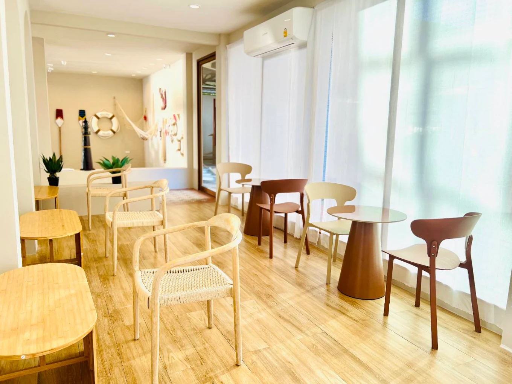

มุมโปรดของสายคอนเทนต์
ใครที่กำลังมองหาที่นั่งอ่านหนังสือเงียบ ๆ หรืออยากได้รูปโปรไฟล์สวย ๆ สไตล์เกาหลี แนะนำร้าน Heartmade Solis Cafe เลยครับ ร้านตกแต่งด้วยโทนสีอุ่นและไม้สีอ่อน สบายตามาก ขนมปังโทสต์ของที่นี่กรอบนอกนุ่มใน หอมเนยแท้ฟุ้งไปทั้งร้าน ทานคู่กับลาเต้ร้อนคือที่สุดครับ